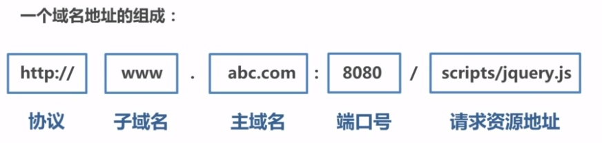
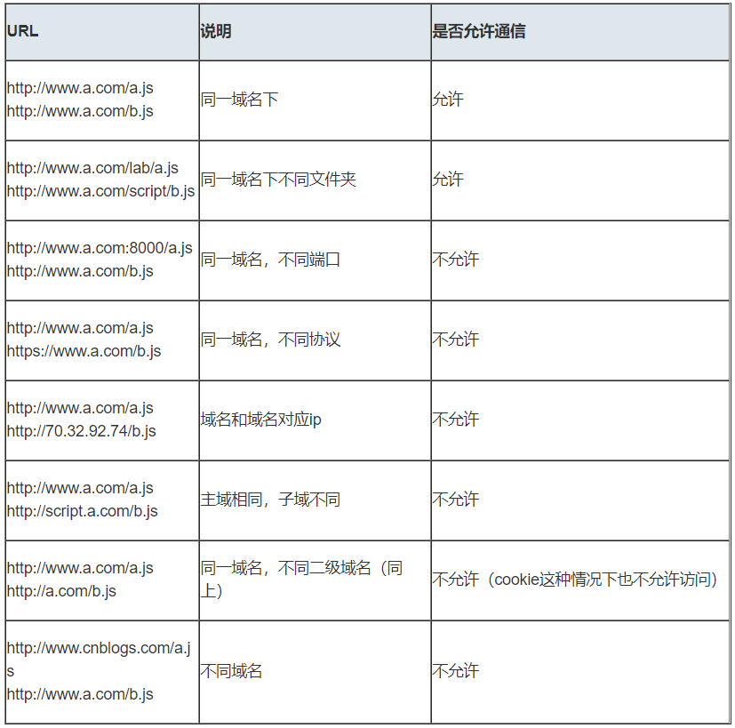

跨域
一、什么是跨域
浏览器的同源策略
1. 什么是同源策略及其限制内容
同源策略是一种约定，它是浏览器最核心也是最基本的安全功能，如果缺少了同源策略，浏览器很容易受到XSS、CSRF等攻击。所谓同源是指”协议+域名+端口”三者相同，即便两个不同的域名指向同一个ip地址，也非同源。

同源策略限制内容有：
- Cookie、LocalStorage、IndexedDB等存储性内容
- DOM节点
- AJAX请求发送后，结果被浏览器拦截了
但有三个标签是允许跨域加载资源：
- img
- link
- script
2. 常见跨域场景
当协议、子域名、主域名、端口号中任意一个不相同时，都算作不同域。不同域之间相互请求资源，就算作“跨域”。常见跨域场景如下图所示：

说明两点
一、 如果是协议和端口造成的跨域问题前端无能为力
二、在跨域问题上，仅仅是通过“URL的首部”来识别而不会根据域名对应的IP地址是否相同来判断。“URL的首部”可以理解为“协议，域名和端口必须匹配
问：请求跨域了，那么请求到底发出去没有？
跨域并不是请求发不出去，请求能发出去，服务端能收到请求并正常返回结果，只是结果被浏览器拦截了。你可能会疑问明明通过表单的方式可以发起跨域请求，为什么 Ajax 就不会?因为归根结底，跨域是为了阻止用户读取到另一个域名下的内容，Ajax 可以获取响应，浏览器认为这不安全，所以拦截了响应。但是表单并不会获取新的内容，所以可以发起跨域请求。同时也说明了跨域并不能完全阻止 CSRF，因为请求毕竟是发出去了。
二、 跨域解决方案
1. jsonp
1) 原理： 利用<script>标签没有跨域限制的漏洞，网页可以得到从其他来源动态产生的JSON数据。JSONP请求一定需要对方的服务器做支持才可以
2) JSONP和AJAX对比
JSONP和AJAX相同，都是客户端向服务器发送请求，从服务器获取数据的方式。但AJAX属于同源策略，JSONP属于非同源策略（跨域请求）
3) JSONP优缺点
JSONP优点时简单兼容性好，可用于解决主流浏览器的跨域数据访问的问题。缺点时仅支持get方法，具有局限性，不安全可能会遭受XSS攻击
4) JSONP的实现流程
- 声明一个回调函数，其函数名（如show）当作参数值，要传递给跨域请求数据的服务器，函数形参为要获取目标数据（服务器返回的data）
- 创建一个
<script>标签，把那个跨域的API数据接口地址，赋值给script的src，还要在这个地址中向服务器传递该函数名（可以通过问号传参: ?callback=show） - 服务器接收到请求后，需要进行特殊的处理： 把传递进来的函数名和它需要给你的数据拼接成一个字符串，例如: 传递进去的函数名是show，它准备好的数据是show(‘hhh’)
- 最后服务器把准备的数据通过HTTP协议返回给客户端，客户端再调用执行之前的声明的回调函数（show），对返回的数据进行操作
1 | // index.html |
5) jQuery的jsonp形式
JSONP都是GET和异步请求的，不存在其他的请求方式和同步请求，且jQuery默认就会给JSONP的请求清除缓存
1 | $.ajax({ |
2. cors
CORS需要浏览器和后端同时支持。IE 8 和 9 需要通过 XDomainRequest 来实现。
浏览器会自动进行CORS通信，实现CORS通信的关键是后端。只要后端实现了CORS，就实现了跨域
服务端设置Access-Control-Allow-Origin就可以开启CORS。该属性表示哪些域名可以访问资源，如果设置通配符则表示所有网站都可以访问资源
虽然设置CORS和前端没啥关系，但通过这种方式解决跨域问题的话，会在发送请求时出现两种情况，分别为简单请求和复杂请求
1) 简单请求
只要同时满足以下两大条件，就属于简单请求
条件一： 使用下列方法之一：
- GET
- HEAD
- POST
条件二： Content-Type的值仅限于下列三者之一： - text/plain
- multipart/form-data
- application/x-www-form-urlencoded
2) 复杂请求
不符合以上条件的请求就肯定是复杂请求了。复杂请求的CORS请求，会在正式通信之前，增加一次HTTP查询请求，称为“预检”请求，该请求是option方法的，通过该请求来知道服务端是否允许跨域请求
我们用PUT向后台请求时，属于复杂请求，后台需要做如下配置
1 | // 允许哪个方法访问我 |
postMessage
postMessage是HTML5 XMLHttpRequest Level 2中的API，且是为数不多可以跨域操作的window属性之一，它可用于解决以下方面的问题
- 页面和其打开的新窗口的数据传递
- 多窗口之间消息传递
- 页面与嵌套的iframe消息传递
- 上面三个场景的跨域数据传递
postMessage()方法允许来自不同源的脚本采用异步方式进行有限的通信，可以实现跨文本档、多窗口、跨域消息传递
otherWindow.postMessage(message.targetOrigin,[transfer])
- message: 将要发送到其他 window的数据。
- targetOrigin:通过窗口的origin属性来指定哪些窗口能接收到消息事件，其值可以是字符串”*”（表示无限制）或者一个URI。在发送消息的时候，如果目标窗口的协议、主机地址或端口这三者的任意一项不匹配targetOrigin提供的值，那么消息就不会被发送；只有三者完全匹配，消息才会被发送。
- transfer(可选)：是一串和message 同时传递的 Transferable 对象. 这些对象的所有权将被转移给消息的接收方，而发送一方将不再保有所有权。
//没看懂 下一个
websocket
Websocket是HTML5的一个持久化的协议，它实现了浏览器与服务器的全双工通信，同时也是跨域的一种解决方案。WebSocket和HTTP都是应用层协议，都基于TCP协议。但是WebSocket是一种双向通信协议，在建立连接后，WebSocket的server与client都能主动向对方发送或接收数据。同时，WebSocket在建立连接时需要借助HTTP协议，连接建立好了之后client与server之间的双向通信就与HTTP无关
原生WebSocket API使用起来不太方便，我们使用Socket.io，它很好地封装了webSocket接口，提供了更简单、灵活的接口，也对不支持webSocket的浏览器提供了向下兼容。
我们先来看个例子：本地文件socket.html向localhost:3000发生数据和接受数据
1 | // socket.html |
1 | // server.js |
Node中间件代理
实现原理： 同源策略是浏览器需要遵循的标准，而如果是服务器向服务器请求就无需遵循同源策略。代理服务器需要做以下步骤：
- 接受客户端请求
- 将请求转发给服务器
- 拿到服务器响应数据
- 将响应转发给客户端
我们先来看个例子：本地文件index.html文件，通过代理服务器http://localhost:3000向目标服务器http://localhost:4000请求数据。
1 | // index.html(http://127.0.0.1:5500) |
1 | // server1.js 代理服务器(http://localhost:3000) |
1 | // server2.js(http://localhost:4000) |
6. nginx反向代理
实现原理类似于Node中间件代理，需要你搭建一个中转nginx服务器，用于转发请求
使用nginx反向代理实现跨域，是最简单的跨域方式。只需要修改nginx的配置即可解决跨域问题，支持所有浏览器，支持session，不需要修改任何代码，并且不会影响服务器性能
实现思路： 通过nginx配置一个代理服务器（域名与domain1相同，端口不用）做跳板机，反向代理访问访问domain2接口，并且可以顺便修改cookie中的domain信息，方便当前域cookie写入，实现跨域登陆
先下载 nginx ，然后将nginx目录下的nginx.conf修改如下:
1 | // proxy服务器 |
最后通过命令行nginx -s reload启动nginx
1 | // index.html |
1 | // server.js |
#前端 #blog